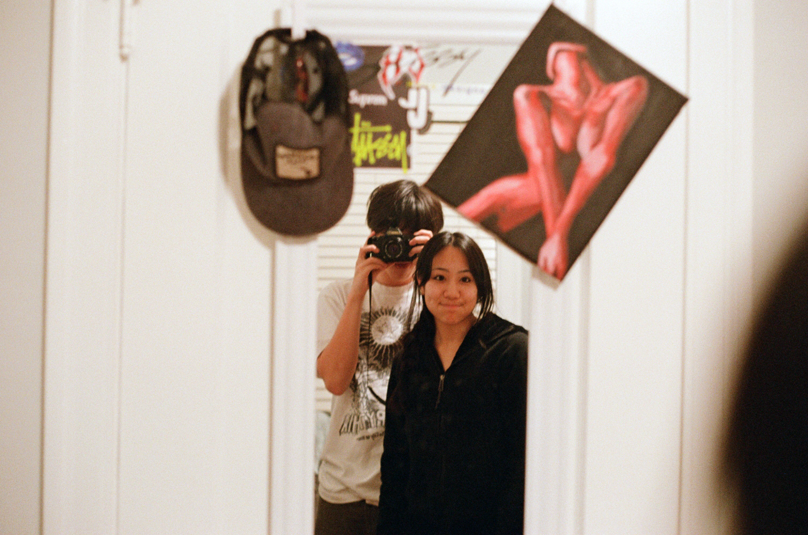

Ethan Irwin
Computer Science and Stats -- Sophomore
Hello! I'm Ethan and I am an intended CS and Stats major at UC Berkeley.
I was born in San Francisco and have lived in the Bay Area my whole life.
Outside of school, I enjoy spending my time rock climbing, skating, and playing videogames.
I'm very excited to take this class and look forward to meeting everybody!
Favorite places to eat in Berk
- Artichoke Pizza
- Taiwan Professional Tea
- Mezzo

Tell your friends
Reading Responses
- What is something you learned from this article?
From the article, I learned that developing an eye for design is not about merely copying
trending designs but understanding how all the pieces work together. The author
emphasizes the importance of studying apps and products critically,
thinking as if you were the designer. This involves examining aspects like hierarchy, content,
intent, and audience to understand the design decisions made and how they serve the user.
- What was your favorite part of this article?
My favorite part of the article is the section titled "Don't just use apps, study them."
This section provides actionable advice on how to critically analyze and
understand design by focusing on various elements such as hierarchy,
content, intent, and audience. It encourages readers to actively engage
with the design of apps they use regularly, fostering a deeper
appreciation and understanding of design principles.
- Copy and paste a quote you found compelling or cool:
"By routinely analyzing other apps, you’ll develop your product thinking and get better at designing apps yourself"(Warner).
- On a scale from 1 to 10, how much did you enjoy reading this article? If you scored below a five, please briefly explain why.
7